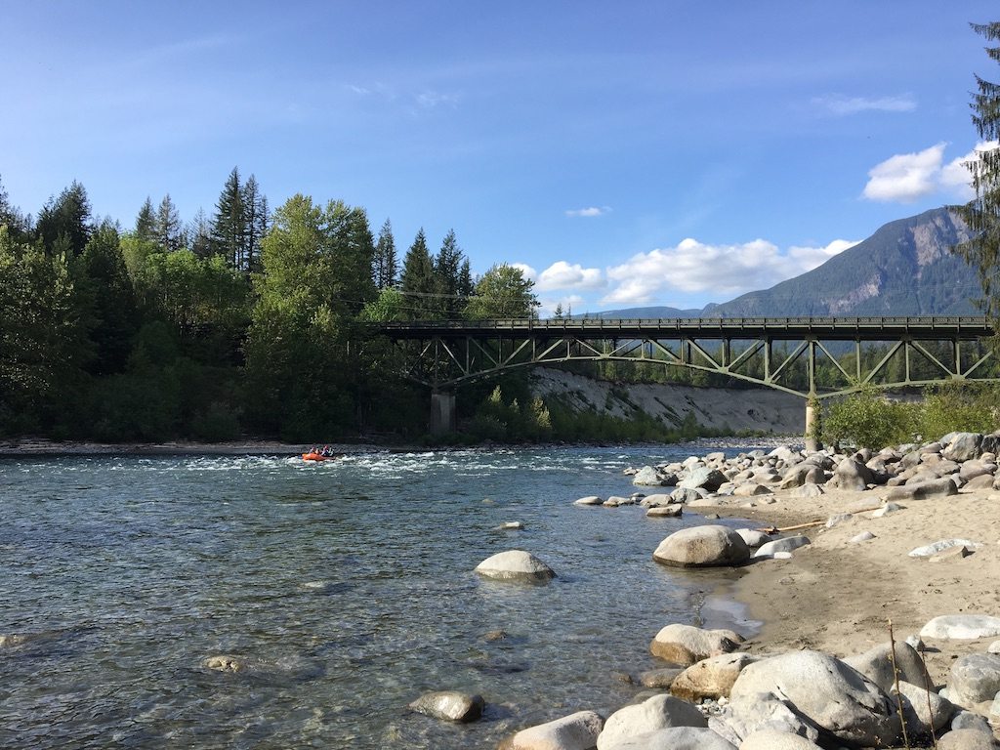
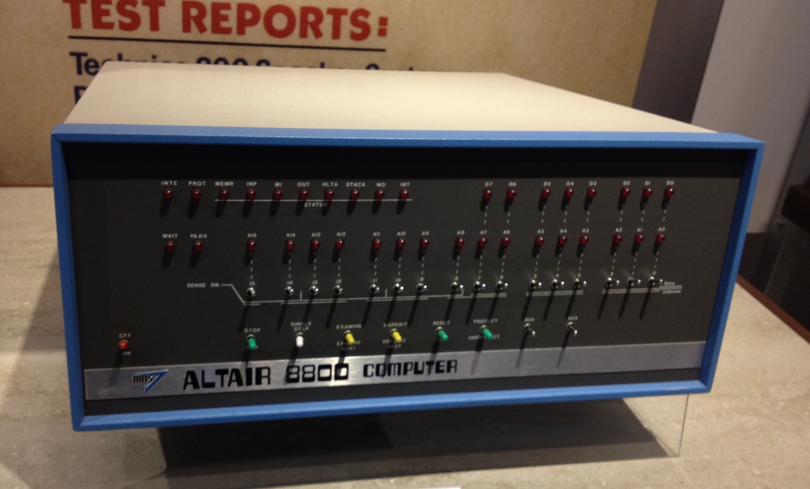

About
My name is Joshua (or Josh—I go by either) Wedekind, and I am the professor for WEB 130!
I spend most of my weekdays coding for Microsoft. When I'm not coding for work, I often work on side
projects—dreams really—or learn new things to keep up with tech. Lately I've been working
on a coffee tasting notes app for iOS. (SwiftUI is awesome).
I grew up in the Midwest, but I'm now entrenched in the Pacific Northwest. I love pine trees more than is natural.
The scent brings back fond childhood memories. I plan on staying in the PNW for a while.
Things I enjoy!

Hiking! Or just being outdoors in the beautiful PNW. I never saw mountains growing up, so now I take every opportunity
to go out to the mountains and hike.
The recent closures of the parking lots around popular trails is a real bummer.
This photo is of Big Eddy out near Gold Bar, WA.
While the parking lot and restroom is closed, there is still plenty of street parking nearby.

I am a huge retro tech fan. No, I don't own the Altair 8800, but I've gotten dangerously close to buying the clone that
was made a few years ago.
I can't remember how it all started, but I own a small collection, including:
- Apple IIe
- Apple IIgs
- Atari 400
- Commodore 128D
- KayPro II
- KayPro 4
- TI 99/4A